Story editor
The Story tab of a book is where you write. It shows the parts of the active branch from the beginning to the end.
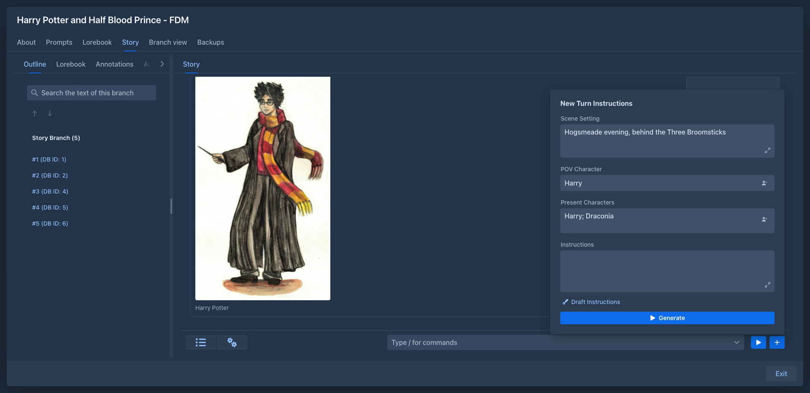
This page describes the desktop layout. On a phone the story is one column with the outline in a drawer, see Using Marginalia on a phone.
This is how a new book looks. All of these are tabs you can arrange as you like, the story included, see
The story always opens at the bottom, at the newest part. A long book is not drawn all at once: only the last parts are loaded, and the earlier ones are added above as you scroll up, without moving the part you are reading. The parts at the other end are dropped again, so no more than the Parts loaded at once in the story setting of your account stay loaded (empty loads all of them). If you scroll faster than the parts arrive, a Loading earlier parts (or later parts) mark at the edge says that there is more. Clicking a part in the outline, or finding one with the search, loads the parts around it, and starting a new part brings you back to the end of the story.
Searching the story
Above the outline there is a search field for the text of the branch you are on (the search of the story tree searches all branches). Because a long book is not loaded all at once, the search of the browser (Ctrl+F) cannot find text in the parts that are not loaded; this one can.
-
Type what you look for; the search starts when you stop typing. Several words must all be in the same part, a phrase goes in double quotes (
"old key") and*stands for any characters (light*house). The case does not matter. -
Every place where a word stands is a match, and they are numbered through the whole branch. Below the field you see Match 3 of 27, in part #5 and a bar with how far you are. The story scrolls to the match and loads the parts around it when they are not loaded.
-
The up and down buttons go to the previous and the next match (after the last one it goes round to the first). Enter in the field does the same as the down button, Shift+Enter as the up button.
-
All the matches in the loaded parts are highlighted in the text, the match you are at in a stronger colour. Clear the field to remove the highlight.
On the phone the search is in the outline drawer; the drawer closes when it shows a match, open it again for the next one.
The lorebook tab
The Lorebook tab of the sidebar shows the lore of the book's lorebook without leaving the story, so you do not have to swap tabs to check what an entry says. It is a preview: nothing can be changed here, change the lore in the book's Lorebook tab. It is read again every time you come back to the Story tab, so changes you made there show at once.
-
Every entry is a row with its name; the arrow opens it to show its content (rendered as Markdown) and the text that activates it (the Filtering Text/Pattern, with a note when it is a regular expression).
-
Include sub lorebooks shows the lorebook and each of its sub lorebooks (and theirs, however deep) as rows of their own, with their entries under them; click the arrow of a lorebook to hide its entries. Without it only the entries of the book's lorebook are listed.
-
Entries and lorebooks that are switched off (they are not used for the story) are shown dimmed.
-
A book without a lorebook shows a note instead.
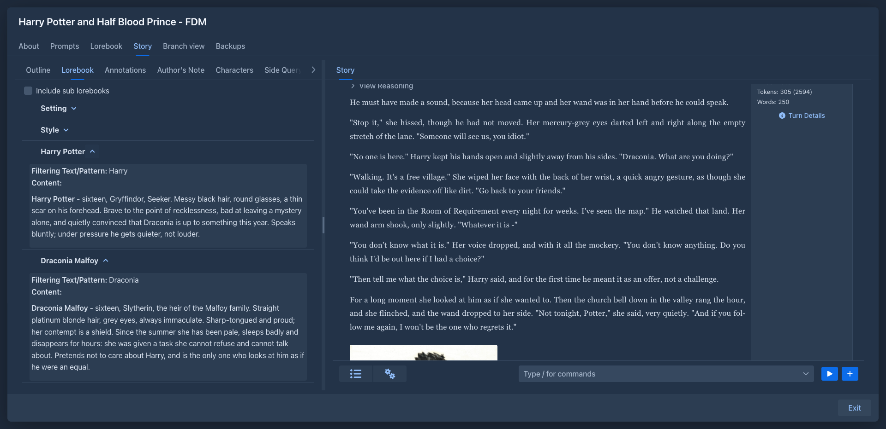
Like every tab of the editor it can be dragged out into a panel of its own, see below.
Arranging the tabs
The editor is a set of tabs: the Story itself (the parts and the bottom bar under them), the Outline, the Lorebook, and the tabs extensions add (Characters, Arcs, Side Query...). Drag a tab by its header to rearrange them (desktop only, the phone keeps one column with the outline in a drawer). A new book has the Outline and the Lorebook in a panel on the left and the Story in a column of its own on the right; you can put the story anywhere, for example in the middle with the outline on one side and the lore on the other, or above the outline:
-
Drop it on one of the dashed strips that appear above, between and under the panels of a column to detach it into a panel of its own in that column; the panels of a column are stacked under each other.
-
Drop it on one of the tall strips at the left, right or between the columns to detach it to the side: it gets a column of its own, next to the others. Widen the editor with the dividers to make room for more columns.
The panels and the columns are separated by splitters: drag them to give each panel the room you need. The sizes are saved with the arrangement.
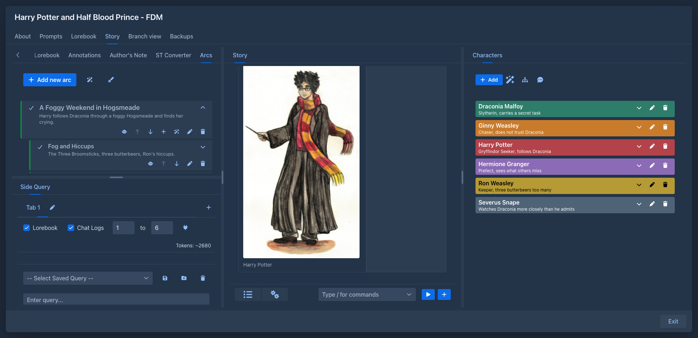
- Drop it on the tab header or on the body of another panel to join that panel (dropping on a tab puts it before that tab, dropping on the body puts it last). A panel that loses its last tab disappears, and so does a column without panels.
The arrangement and the sizes are saved with the book, so it is the same the next time you open it and in every browser; the tab each panel shows is remembered with the rest of your workspace. A tab of an extension that is not loaded keeps its place for when the extension is back.
The story is always somewhere: its tab can't be closed, and a tab that lives in a panel together with other tabs is hidden while another one is selected. Whatever shows a part brings the story back: clicking an entry of the outline, a hit of the search, choosing a branch in the story tree, and starting a generation select the Story tab first. While a generation runs the other tabs are disabled and only the story stays usable, so you can stop it.
Minimizing tabs
Every tab but the story has a small – button next to its name. It minimizes the tab: the tab leaves its panel (a panel whose tabs are all minimized disappears for the time being) and a round icon of it, a circle with one or two letters (Ch for the outline, Lo for the lorebook, An for the annotations, SQ for Side Query, and so on), shows up in a bar at the edge of the editor. Hover over the icon to see which tab it is. Nothing is closed, the tab keeps what it was showing. Click the icon and the tab comes back to the panel and the place among the tabs where it was, and is shown.
The bar is there while some tab is minimized. The button at its top (the circling arrows) sends the bar to the next side of the editor, clockwise: left, top, right, bottom. The story can't be minimized, so there is always something on the screen.
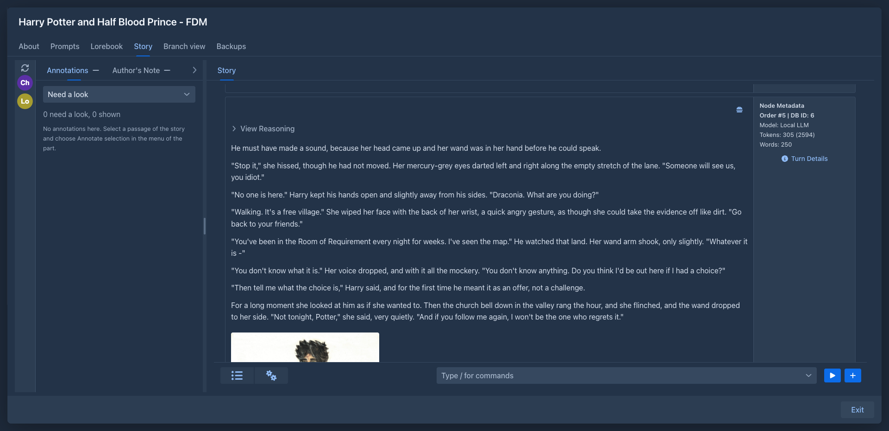
Which tabs are minimized and where the bar is are saved with the book, together with the arrangement and the sizes.
The default arrangement
A new book opens with the standard arrangement (the outline, the lorebook and the annotations on the left, the story on the right). To make your own arrangement the standard one, set the tabs as you like them (panels, sizes, minimized tabs, the side of the bar) and choose Save layout as my default in the settings menu (⚙) of the story. Every book that has no arrangement of its own (a book you have not rearranged) then opens with it; a book you have arranged keeps its arrangement. The default is kept in your user settings.
To go back to the default arrangement, choose Restore default layout in the settings menu (⚙) of the story and confirm. This is the one you saved, or the standard one when you saved none. It only moves the tabs back (and forgets the sizes and what is minimized): your texts, the tab each panel shows and the tabs of extensions stay, the latter in the first panel.
Writing the next part
- Click + in the bottom right corner. The New Turn Instructions panel opens.
-
Fill in the fields. All of them are optional, but the model needs at least some direction:
Scene Setting, POV Character and Present Characters are filled in from the last part, so you only change what is different. Instructions starts empty each time.
- Click Generate.
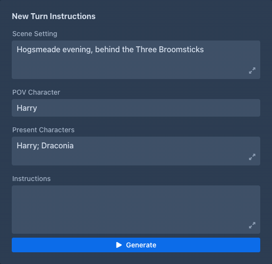
The new part appears at the end and fills in as the model writes it. For reasoning models the reasoning appears first under View Reasoning.
While a part is being generated, the + button turns into a red Stop button. Stopping keeps the text written so far as the part. The rest of the book window is disabled until the generation finishes or is stopped.
When the model returns an error (server not reachable, wrong API key, context too long...), the error is shown. If no text arrived yet, the story stays as it was: a new part or swipe is removed and a regenerated part gets its previous text back. Text that already arrived before the error is kept, like with Stop. Fix the problem and generate again.
How the fields get into the prompt is set by the book's User Prompt. With the default user prompt, the model gets them as Current Location & Time, Point of View Character, Characters Currently Present / State and Plot Specifications for the Next Part.
The text is written in Markdown: *italics*, **bold**, # Heading and so on are shown formatted. A part with a
# heading is a chapter for the Chapter Marker extension.
Drafting the instructions
Do not know what should happen next? Draft Instructions under the Instructions field of the panel lets the model write the instructions in your place, the way you would. A window opens with:
Draft Instructions starts the model and streams the answer into Drafted Instructions, which you can change or empty before you go on; Draft Again tries once more, Stop keeps what has arrived. Nothing is changed until you click Use as Instructions: the text then replaces the Instructions of the panel (the other fields are not touched) and the panel opens again, ready for Generate.
The model gets the story so far (the older story as summaries, as in a generation), the scene setting, POV and present characters that are in the panel, the lore of the last part, your latest instructions as examples of how you write them, your guidance and the plan. It does not see your lorebook entries that a new turn would activate. The request is the impersonate prompt. The model is the one of the book; drafting costs tokens like any request.
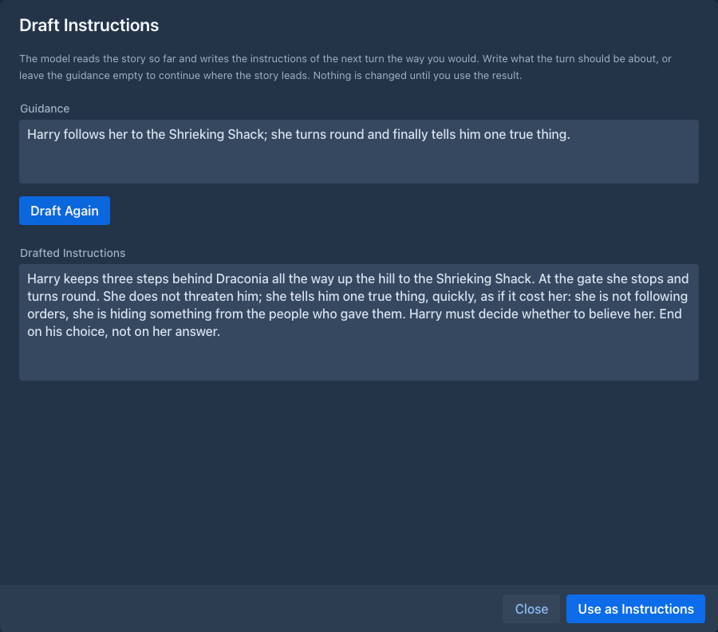
The same is the command /impersonate, which returns the text. Agents do not get it, they write
the story with instructions of their own.
The part menu
Every part has a menu (☰) in its top right corner:
Regenerate and Swipe use the turn details of the last part (see
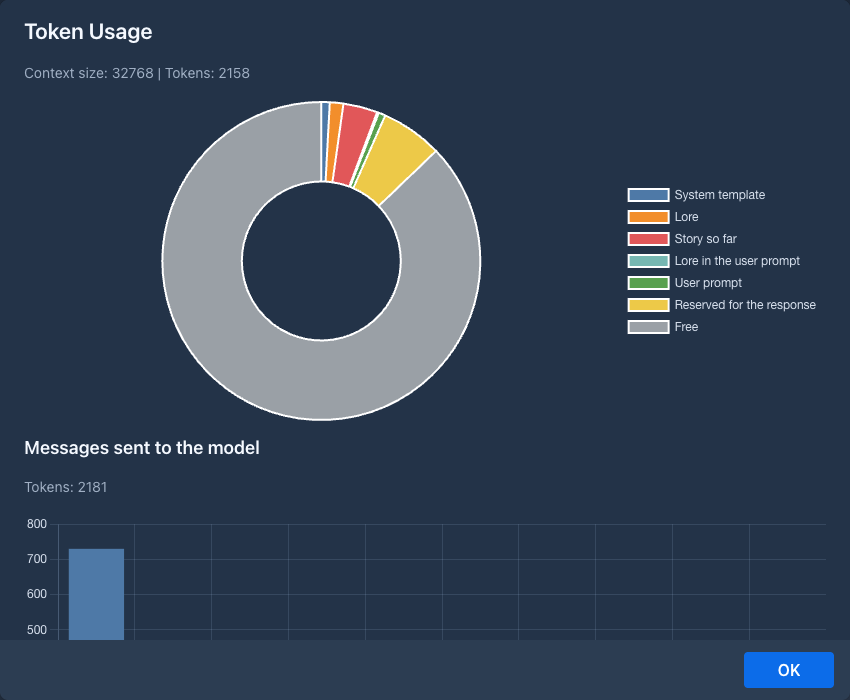
Part metadata
Next to each part:
Turn details
Turn Details opens the Scene Setting, POV Character, Present Characters and Instructions the part was written from. For the last part they can be changed (changes are saved right away) and are used by Regenerate and Swipe. For earlier parts they are read-only.
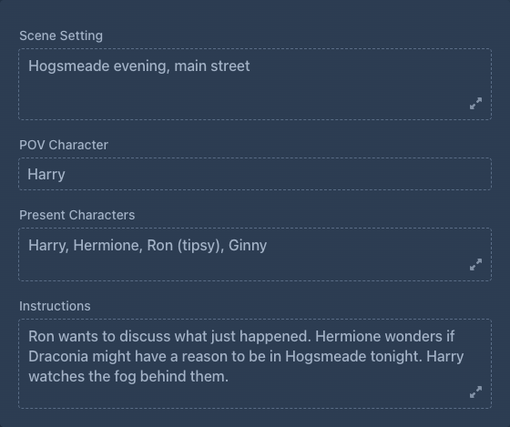
Editing the text
Generated text is yours to change. Choose Edit in the part menu, change the text, and choose Save. Edited parts are sent to the model as you edited them.
Editing a part that a summary covers makes that summary outdated; Marginalia notices it at the next generation and drops the summary.
Keyboard shortcuts
On a computer (the phone layout has none) the writing loop works with the keyboard:
A key without Ctrl, Alt or Meta (such as +, s, r, e, a, /) works only when no text field has the focus, so it
never gets in the way of typing. The shortcuts work in the story tab of the open book and not while another window is
open above it. The buttons show their key in the tooltip, and the menu of the last part shows it after Edit, Regenerate and Swipe. On a Mac Cmd works where a key says Ctrl (unless you gave that Cmd key to another action). You can change every key in
Settings → Keyboard shortcuts.
Deleting a part
Delete removes the part from the story. The parts that followed it stay and continue from the part before it, so deleting a part in the middle of the story just takes it out. Deleting the last part makes the part before it the new end of the branch.
Deleting many parts at once
The settings menu (⚙) has Mass delete. Turning it on puts a check box at the left of every part and shows a bar under the story with the number of ticked parts and a Delete button. Tick the parts you want to get rid of (the ticks are kept while you scroll, the story loads only a window of the parts); Shift + click on a check box ticks (or clears) all the parts between it and the one you clicked before; a ticked part is tinted red. Then press Delete: after a confirmation the parts are deleted one by one behind a progress bar that can't be stopped. They are deleted as a single part is: the parts that followed a deleted part continue from the part before it, and the deleted parts go to the trash. Then the story is shown again and the mass delete is off. Cancel in the bar, or choosing Mass delete again, turns it off without deleting anything. Starting a generation also turns it off.
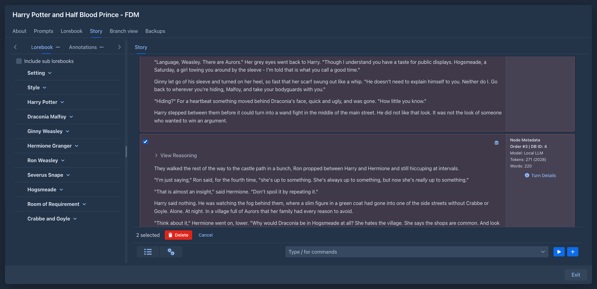
Redrafting a part
Regenerate and Swipe work on the last part only and write it from scratch. Redraft works on any part, also an old one in the middle of the story, and keeps what you do not ask to change. Choose Redraft in the menu of the part:
-
Write what should change in Instructions for the redraft: add more dialogue between the two, make the fight longer, remove the explanation of the map, keep the ending as it is. Empty instructions write the part again with the same events.
-
Choose Redraft. The text streams into Redrafted text; Stop ends it early. Choose Redraft again for another try, with other instructions if you like. Differences shows what changed against the part, word by word. When the part has open annotations, Deal with the open annotations of the part (checked at first) gives them to the model as well, and Apply marks them resolved.
-
The redrafted text is a field you can still edit (its corner icon makes it grow to fit the whole text), and Differences follows your edits. Apply replaces the text of the part with it; Close throws it away. Nothing in the book changes before Apply.
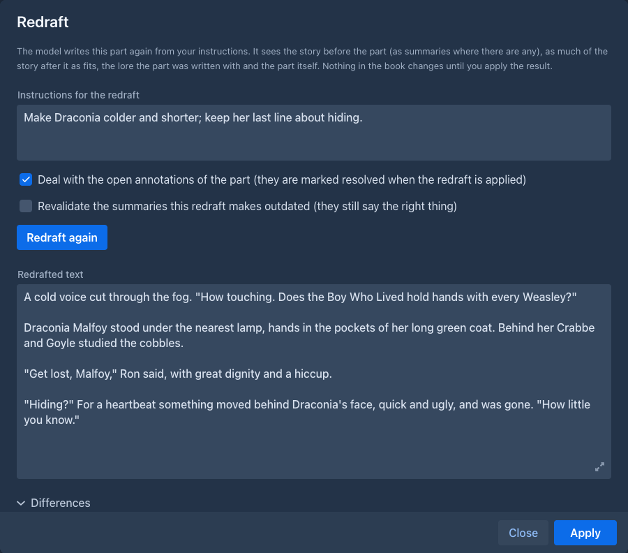
The model gets the redraft prompts: the part, your instructions, the story before the part (the older story as summaries where there are valid ones, the rest as text, the newest part first when it does not all fit), as much of the story after the part as fits (up to a quarter of the room), the lore the part was written with, the point of view, tense and style of the book, and the scene setting, point of view character, present characters and instructions of the turn the part came from. The story after the part is there so the new text still leads into it: events the following parts rely on should stay.
The part keeps its place, its summary, its pictures and how it was generated; the text, its words and tokens are replaced and the part counts as edited. Applying the redraft is an edit like Save in the editor, so summaries that describe the old text become outdated, and Marginalia tells how many. A summary on the part itself is one of them.
When a summary describes the part (the part has one, or a newer part of the branch does), the window has the checkbox Revalidate the summaries this redraft makes outdated, unchecked at first. Check it when the summaries still say the right thing (the redraft changed the wording, not what happens): Apply then works out their hash again and they stay valid. Leave it unchecked when the events changed, and make the summaries again.
Redrafting only a passage
To rewrite a few sentences and leave the rest of the part alone, select them in the text of the part and right click (a long press on a phone): the menu has Redraft selection. (The menu ☰ of the part is not offered for this, opening it can lose the selection in some browsers.) The window works as above with two differences: it shows the Selected text, and the redraft is only the text that replaces it. The model gets the whole part with the selection marked, and the story and lore around it, so the new passage joins the sentences before and after it. Differences compares the selection with the redrafted text; Apply puts the redrafted text in the place of the selection and keeps the rest of the part, including the space or line break at the edges of the selection. With open annotations the check box offers only the ones whose passage overlaps the selection. If the part was changed after you selected the text (in another window), Apply refuses and you select it again. While the part is edited the selection in the editor is used, and the edit is saved first.
Merging a part into the previous one
A model that stopped in the middle of a sentence (the response limit, a cut connection) cannot be told to "continue" the same text reliably. Write the next part instead (continue from where the last part stopped) and join the two with Merge into previous part in the menu of the second one. A review opens:
-
Join the texts with: an empty line, a line break, a space or nothing. It is preselected from the end of the previous text: a paragraph after a text that ended a sentence, a space after one that was cut.
-
The scene setting, POV character, present characters and instructions of both turns, combined in fields you can edit. What the two turns have in common at the start is kept once ("Write the duel. Keep it short" and "Write the duel. Add rain" give the first, and "Add rain" on the next line).
-
Data: what the two parts keep, value by value (for example the variables of the story and the data of extensions), with whether the value is the same, different or only on one of the parts. The merged part keeps the value of the later part (it is where the story stands now) unless you choose the value of the previous part for it, or leave the value out. Values that are the same are hidden unless you ask for them.
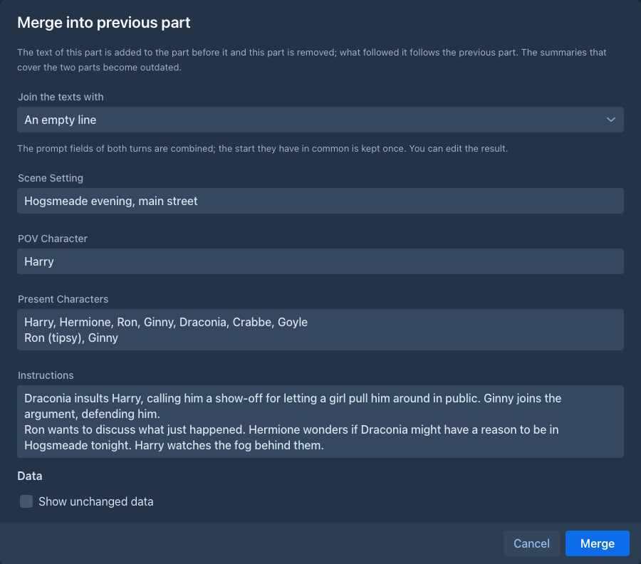
The previous part keeps its place, its summary and how it was generated (prompt, model, times); it gets the joined text, the joined reasoning and pictures, and its words and tokens are counted again. The part you merged is deleted (it is in the Trash) and what followed it continues from the previous part. Summaries that cover the two parts become outdated, as after an edit. The history of the part that was merged is removed, and the surviving part has the joined text as a Merged version. The part cannot be merged when it is the first part of the book, or when the part before it has other continuations (swipes of the part): delete them or make them a branch first.
Images
A part can have pictures: a map, a character portrait, an illustration. Choose Images in the part menu to open the list of the pictures of the part.
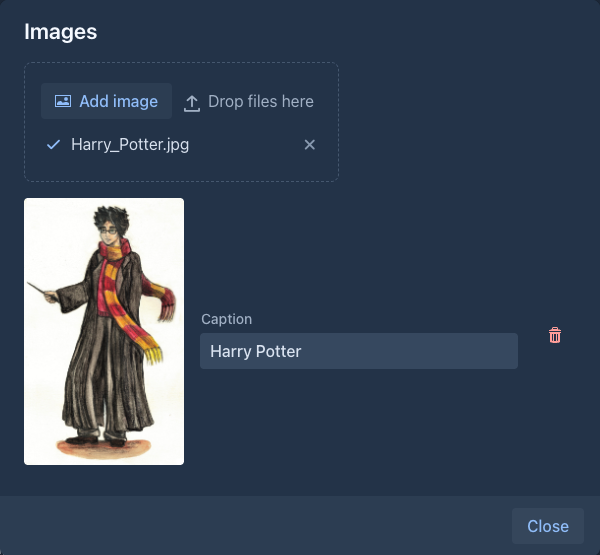
-
Add image (or drop a file on it) uploads a PNG, JPEG, GIF or WebP picture of up to 10 MB. WebP pictures are converted to PNG when they are uploaded, because Word and PDF files can't contain WebP.
-
Caption is shown under the picture. It can be empty.
-
The trash button removes the picture from the part.
The pictures are shown under the text of the part and in the same order in every export.
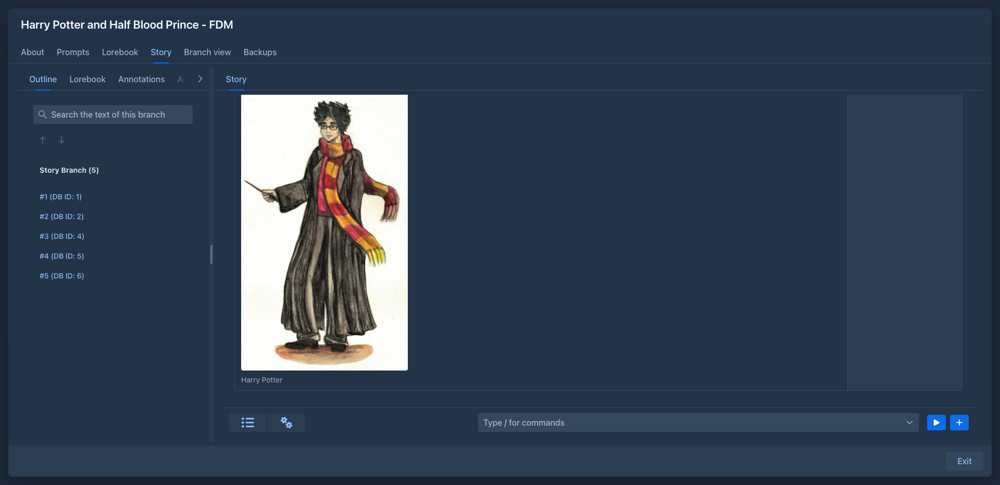
Pictures are not part of the text. The model never sees them, they are not in the prompt, they do not count as
tokens and they do not change the summaries. They are also not Markdown: a  link written in
the text is not a picture of the part, use Images instead.
Good to know:
-
Regenerate keeps the pictures of the part, also when the generation fails. Swipe writes a new part (a new version next to the old one), which starts without pictures. Branch Story copies the pictures to the new part.
-
Pictures belong to your account. In the viewer only you see them; readers of a published book see the text only. A book is published as it is: pictures are not made public with it.
-
A backup remembers which pictures a part has, but not the picture files. Restoring a backup into another account or another installation gives parts without their pictures.
-
Removing a picture from a part only takes it off the part. The file stays and is still listed in Resources, where you can download, replace or delete it. Deleting it there removes it from every part that uses it. The file itself stays in the data folder.
Summaries
The Summaries button in the bottom bar (left of the settings menu ⚙) opens the overview of the summaries of the branch, where they can be edited, deleted and merged into meta summaries. The tooltip of the button shows how many tokens the summaries in use take in the prompt. See Summaries.
How much of the context the story takes
The settings menu (⚙) has Branch Tokens. It shows, before you generate anything, what the story of the active branch takes of the prompt: a bar for the story without summaries (all the parts) and with summaries (the summaries and the parts after the newest one), and a table with the parts, the tokens and the share of the prompt budget (the context of the book's model minus the room for the response). Only summaries that still describe the story count; the ones that no longer match are named, they are dropped when a part is generated. The lore, the system template and the instructions of the turn take room from the same budget. Without a model with a context size the table has no shares.
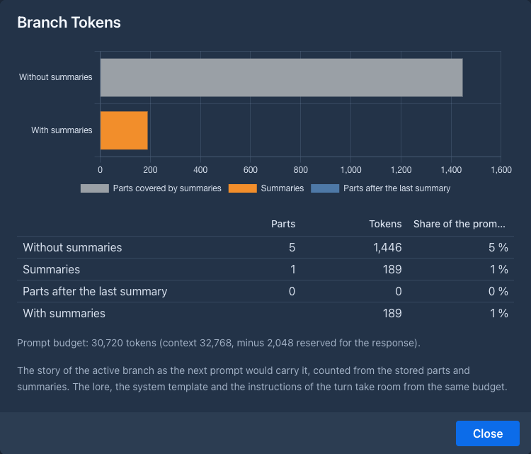
Book styles
The settings menu (⚙) in the bottom bar has Change Styles For Text. It switches the text of the parts between the normal look of the application and a book-like reading style (the one the viewer uses). The setting is saved per book.
In this style paragraphs are justified and long words are hyphenated automatically, using the dictionary of the book's Language (set on the About tab). Hyphenation is done by the browser; for a few rare languages it has no dictionary and the text is simply not hyphenated.
Highlighting generated text
The settings menu (⚙) also has the checkable Highlight Generated Text. While it is on, the text that is still the way the model wrote it is highlighted in every part, so what you added or rewrote stands out. Marginalia keeps the original text of each part and compares it with the current one word by word. A part you never edited is highlighted whole; a part you wrote yourself has nothing highlighted. The switch is not saved: it is off again when the page is opened anew.
Parts that existed before this feature count wholly as generated, because the original text was not kept for them. The highlight is available in the desktop view only, not in the phone view.
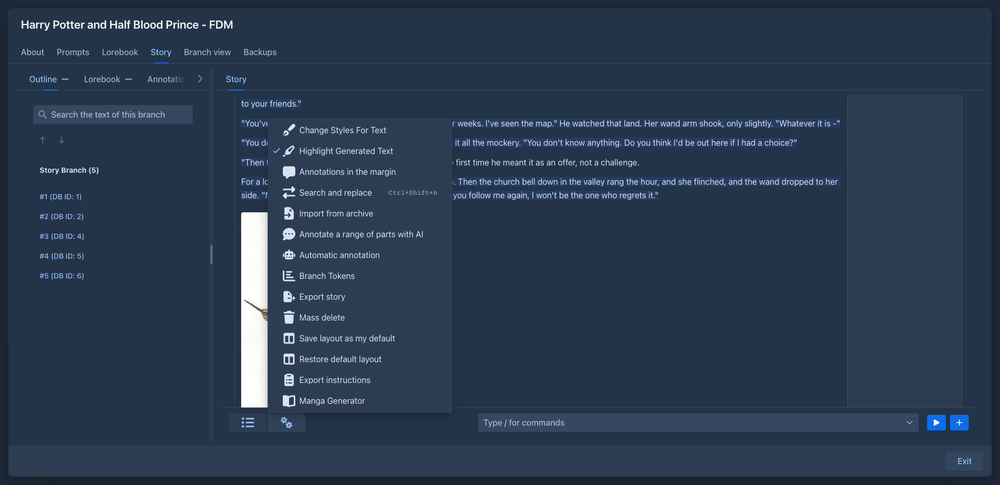
Commands
Next to the menu below the story there is a command line: type / to see the commands, pick one and press Enter
(or the play button) to run it. What a command returns is shown in a small window above the line. See
Commands for how to write arguments, what the help shows and how to stop a command that takes a
while. The command line is only in the story tab of the desktop layout so far.
Search and replace
The settings menu (⚙) also has Clear history of the book and Empty trash of the history, see Version history.
The settings menu (⚙) also has Search and replace, which changes a word, a name or a phrase in the whole story at once. The window has a Search for and a Replace with field and these options:
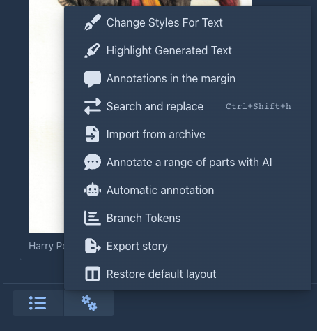
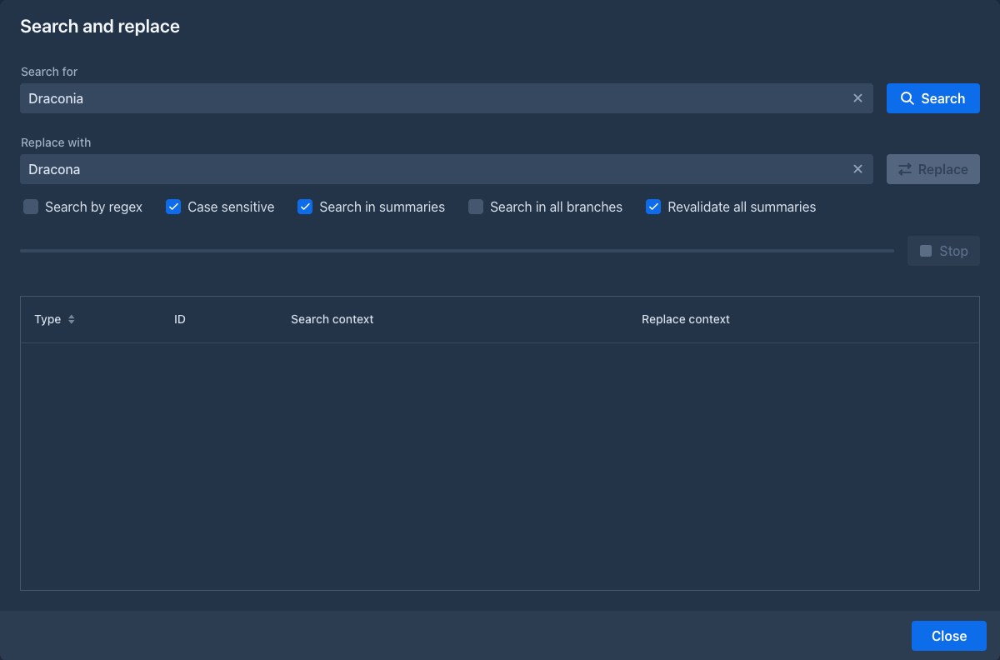
With a regular expression the case is always taken as typed, start it with (?i) to ignore it. Press Search
(the button on the right of the fields; on the phone below them). The progress bar shows how far it is and Stop
next to it interrupts it. Nothing is changed by a search.
The table lists every part of the story and every summary that has a match, with its type and id. Open a row to see the matches in it: the text around the match as it is and as it will be after the replacement. A match or a replacement that is too long to show is written as [searched text] or [replace text].
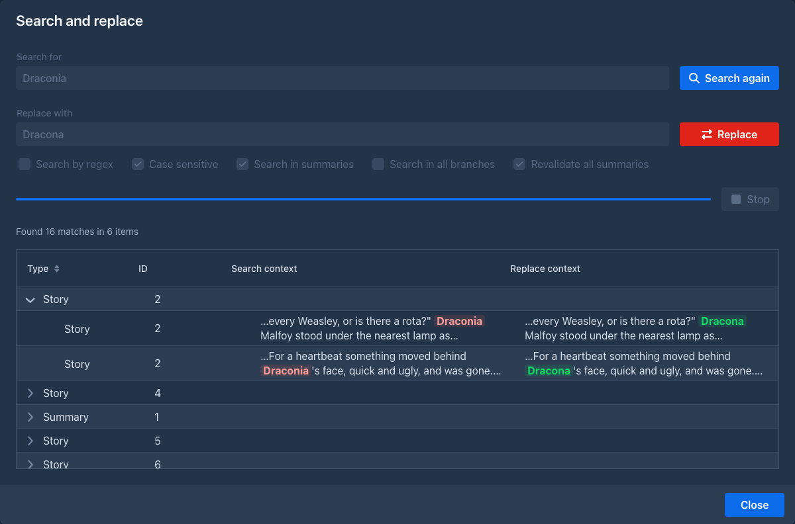
Pressing Enter in the Search for or Replace with field does the same as Search.
When the search is done, the fields and options are locked and the Replace button is enabled. Search again forgets what was found and unlocks the window, so you can change the search. Replace changes the story: the window is frozen completely (even Stop does not work) until it is done, and then it is empty again. Replaced parts are marked as edited, as if you had edited them yourself.
A replace in the text a summary describes would make the summary outdated. With Revalidate all summaries on, Marginalia works out again the check value of every summary of the book (those of all branches too, those the replace did not touch, and those that were outdated before), so all of them are valid afterwards. That also turns an outdated summary valid without its text being looked at, so use it when you know the summaries still say the right thing.
With the option off only the summaries the search covers are brought up to date. Those it does not cover (summaries of branches that are not searched, which share their earlier parts with the active branch; or all of them when summaries are not searched) become outdated. If there are such summaries, Marginalia tells you how many and asks whether to go on. A summary that was outdated already stays so.
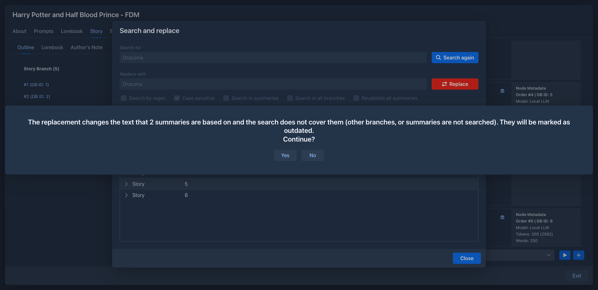
In the phone layout the same window has the fields and buttons below each other, and the table has one column that shows the type and id, and below them the match and the replacement.
The Summaries overview has the same window for the summaries only.
The same search and replace can be run from the command line
with /search-replace-parts; it asks before it replaces.
Importing text files
The settings menu (⚙) has Import from archive. Upload a .zip of .md (Markdown) files and every file is added as
a part at the end of the story: the first one after the last part of the active branch (the first part of an empty
book), each next one after the one before. The files are taken in the order of their names, numbers inside the names
compared as numbers (2.md before 10.md), also in folders of the archive. Folders, hidden files (.name), the
__MACOSX folder and files that are not .md are skipped. The file is the text of the part as it is, it is not sent to
the model and not changed; the parts count as written by you. The summaries are not made, do that in the
summaries window.
The import shows a progress bar with the number of files done. Stop ends it after the part that is being stored: the parts that were already added stay in the story (the import is not undone), and a message tells how many of the files were imported.
The import button of the Books tab does the same into a new book, see Managing books. The same import into a lorebook is described in Import & export.
Exporting the story
The settings menu (⚙) also has Export story, which saves the active branch as a text, Markdown, HTML, Word, PDF or EPUB file. See Exporting a book.
What the model gets
For each new part Marginalia sends:
-
The master template as the system message: role, lorebook entries, point of view, tense, style and summaries. The jailbreak prompt of the inference provider, if enabled, comes first.
-
The previous parts of the active branch as the model's own earlier answers - as many as fit into the context limit, newest first. Older parts that don't fit are left out (unless a summary covers them).
-
The user prompt with the instructions for the new part.
Show Prompt on any part shows exactly what was sent. See Book prompts for the templates.